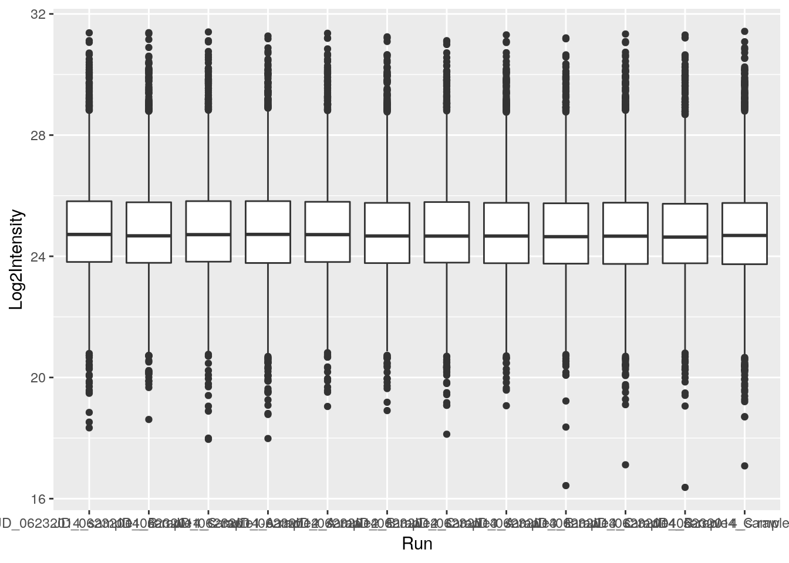
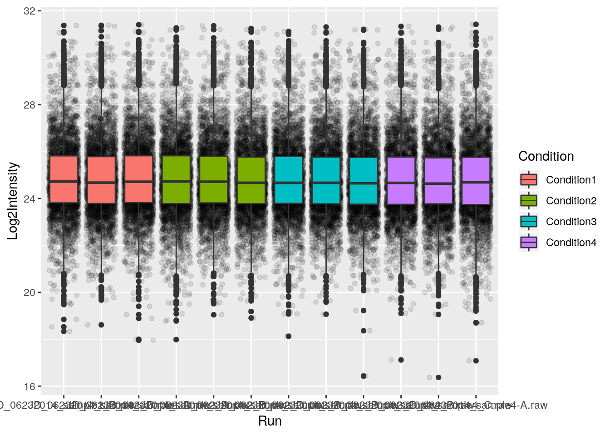
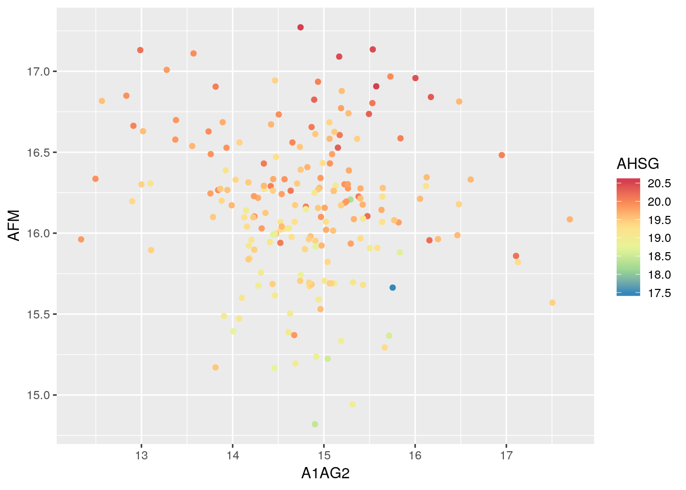
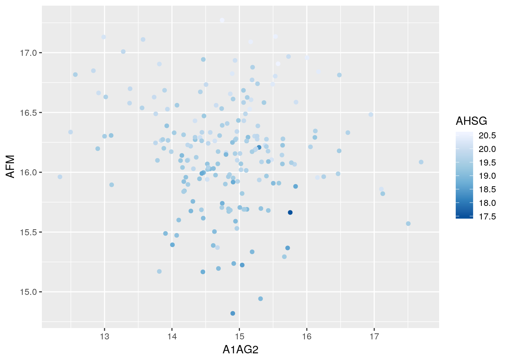
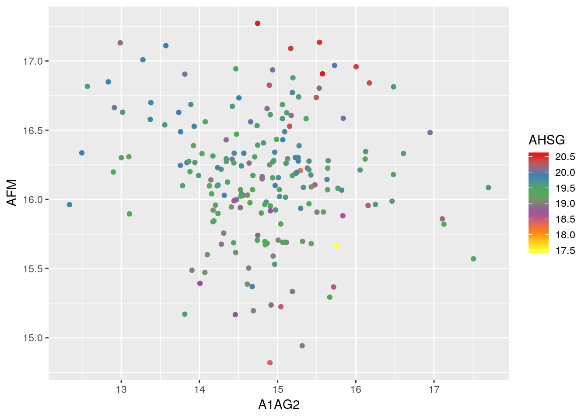
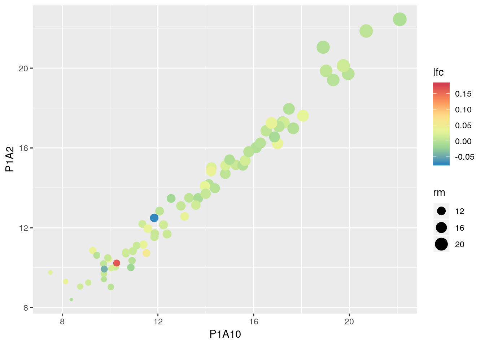

Chapter 5 Plotting in R
5.1 Base graphics
We won’t go through all base graphics plotting functions one by one here. We will encounter and learn several of these functions throughout the course and, if necessary, discuss them when questions arise.
5.2 Plotting with ggplot2

A useful ggplot2 cheet sheet is available
here. More
details are available on the documentation page.
Base graphics uses a canvas model a series of instructions that sequentially fill the plotting canvas. While this model is very useful to build plots bits by bits bottom up, which is useful in some cases, it has some clear drawback:
- Layout choices have to be made without global overview over what may still be coming.
- Different functions for different plot types with different interfaces.
- No standard data input.
- Many routine tasks require a lot of boilerplate code.
- No concept of facets/lattices/viewports.
- Poor default colours.
The ggplot2 package implements a grammar of graphics. Users describe
what and how to visualise data and the package then generates the
figure. The components of ggplot2’s of graphics are
- A tidy dataset
- A choice of geometric objects that servers as the visual representation of the data - for instance, points, lines, rectangles, contours.
- A description of how the variables in the data are mapped to visual properties (aesthetics) or the geometric objects, and an associated scale (e.g. linear, logarithmic, polar)
- A statistical summarisation rule
- A coordinate system.
- A facet specification, i.e. the use of several plots to look at the same data.
Fist of all, we need to load the ggplot2 package and load the iprg data.
ggplot graphics are built step by step by adding new elements.
To build a ggplot we need to:
- bind the plot to a specific data frame using the
dataargument
- define aesthetics (
aes), by selecting the variables to be plotted and the variables to define the presentation such as plotting size, shape color, etc.
- add
geoms– graphical representation of the data in the plot (points, lines, bars). To add a geom to the plot use+operator

See the documentation page
to explore the many available geoms.
The + in the ggplot2 package is particularly useful because it
allows you to modify existing ggplot objects. This means you can
easily set up plot “templates” and conveniently explore different
types of plots, so the above plot can also be generated with code like
this:
## Assign plot to a variable
ints_plot <- ggplot(data = iprg, aes(x = Run, y = Log2Intensity))
## Draw the plot
ints_plot + geom_boxplot()Notes:
Anything you put in the
ggplot()function can be seen by any geom layers that you add (i.e., these are universal plot settings). This includes the x and y axis you set up inaes().You can also specify aesthetics for a given geom independently of the aesthetics defined globally in the
ggplot()function.The
+sign used to add layers must be placed at the end of each line containing a layer. If, instead, the+sign is added in the line before the other layer,ggplot2will not add the new layer and will return an error message.
Challenge
- Repeat the plot above but displaying the raw intensities.
- Log-10 transform the raw intensities on the flight when plotting.

5.3 Building complex plots
First, let’s colour the boxplot based on the condition:

Now let’s rename all axis labels and title, and rotate the x-axis
labels 90 degrees. We can add those specifications using the labs
and theme functions of the ggplot2 package.
ggplot(aes(x = Run, y = Log2Intensity, fill = Condition),
data = iprg) +
geom_boxplot() +
labs(title = 'Log2 transformed intensity distribution per MS run',
y = 'Log2(Intensity)',
x = 'MS run') +
theme(axis.text.x = element_text(angle = 90))
And easily switch from a boxplot to a violin plot representation by
changing the geom type.
ggplot(aes(x = Run, y = Log2Intensity, fill = Condition),
data = iprg) +
geom_violin() +
labs(title = 'Log2 transformed intensity distribution per Subject',
y = 'Log2(Intensity)',
x = 'MS run') +
theme(axis.text.x = element_text(angle = 90))
Finally, we can also overlay multiple geoms by simply adding them one after the other.


Challenge
- Overlay a boxplot goem on top of a jitter geom for the raw or log-10 transformed intensities.
- Customise the plot as suggested above.
Finally, a very useful feature of ggplot2 is facetting, that
defines how to subset the data into different panels (facets).
## [1] "Protein" "Log2Intensity" "Run" "Condition"
## [5] "BioReplicate" "Intensity" "TechReplicate"5.4 Colour scales
p <- ggplot(data = crcdf,
aes(x = A1AG2, y = AFM, colour = AHSG)) +
geom_point()
p + scale_color_viridis()


5.5 Customising plots
Using labs:
p <- ggplot(data = iprg, aes(x = Run, y = log10(Intensity))) +
geom_jitter(alpha = 0.1) +
geom_boxplot()
p + labs(title = "A title, at the top",
subtitle = "A subtitle, under the title",
caption = "Comes at the bottom of the plot",
x = "x axis label",
y = "y axis label")
p
p + theme(axis.text.x = element_text(angle = 90, hjust = 1))Setting themes:
p + theme_bw()
p + theme_gray()
p + theme_dark()
p + theme_minimal()
p + theme_light()
p + theme_void()
## ....See also the ggthemes package.
5.6 Combine ggplot figures
The goal of patchwork patchwork is to make it ridiculously simple to combine separate ggplots into the same graphic. As such it tries to solve the same problem as
gridExtra::grid.arrange()andcowplot::plot_gridbut using an API that incites exploration and iteration.
Installation:
p1 <- ggplot(iprg, aes(x = Condition, y = Log2Intensity)) +
geom_boxplot(aes(fill = Condition)) +
theme(legend.position = "none")
p2 <- ggplot(iprg, aes(x = Intensity, y = Log2Intensity)) +
geom_point()
p3 <- iprg %>%
group_by(TechReplicate, BioReplicate) %>%
tally %>%
ggplot(aes(x = TechReplicate,
y = n,
fill = as.factor(BioReplicate))) +
geom_col() +
theme(legend.position = "none")
p4 <- ggplot(iprg, aes(x = TechReplicate, y = Log2Intensity)) +
geom_violin(aes(fill = Condition)) +
theme(legend.position = "none") +
coord_flip()5.7 Saving your figures
You can save plots to a number of different file formats. PDF is by far the most common format because it’s lightweight, cross-platform and scales up well but jpegs, pngs and a number of other file formats are also supported. Let’s redo the last barplot but save it to the file system this time.
Let’s save the boxplot as pdf file.
The default file name is Rplots.pdf. We can customise that file name
specifying it by passing the file name, as a character, to the pdf()
function.
Challenge
Save a figure of your choice to a pdf file. Read the manual for the
pngfunction and save that same image to a png file.Tip: save your figures in a dedicated directory.
5.8 Exercises
Count the number of quantified proteins for each group, gender and age and visualise the results (suggestion below).
Tips: For age, you can use
cutto bin the ages. You’ll probably want to usedplyr::group_byanddplyr::tallyto obtain the values after converting thecrcdata to a long format.

tbl <- gather(crcdf, key = Protein, value = expression,
-Sample, -Group, -Age, -Gender, -Cancer_stage,
-Tumour_location, -Sub_group) %>%
as_tibble
tbl %>% group_by(age = cut(tbl$Age, 5), Group, Gender) %>%
tally %>%
ggplot(aes(x = Gender, y = n, colour = age)) +
geom_point(size = 5) +
facet_grid( ~ Group)- Experiment with
goem_lineto produce line plots showing the expression data for a subset of samples (below I used those starting with"P1F"). You will need to group proteins for the same protein data points in different samples to be linked.
## geom_path: Each group consists of only one observation. Do you need to
## adjust the group aesthetic?- Plot the expression of all proteins in one sample (for example P1A10) against another one (for example P1A2) and use dataset-wide features such as the log-fold change of all CRC vs. Healthy samples and the grand mean expression intensity.
## Warning: Removed 1 rows containing missing values (geom_point).
x <- MSnbase::ms2df(crc) %>% as_tibble
x$rm <- rowMeans(MSnbase::exprs(crc), na.rm = TRUE)
fc <- rowSums(MSnbase::exprs(crc[, crc$Group == "CRC"]), na.rm = TRUE) /
rowSums(MSnbase::exprs(crc[, crc$Group != "CRC"]), na.rm = TRUE)
x$lfc <- log2(fc)
ggplot(x, aes(P1A10, P1A2, colour = lfc, size = rm)) +
geom_point() +
scale_color_distiller(palette = "Spectral")5.9 References
ggplot2extensions - galleryggplot2webpage and documentation- ggplot2: Elegant Graphics for Data Analysis book (source of the book available for free here).